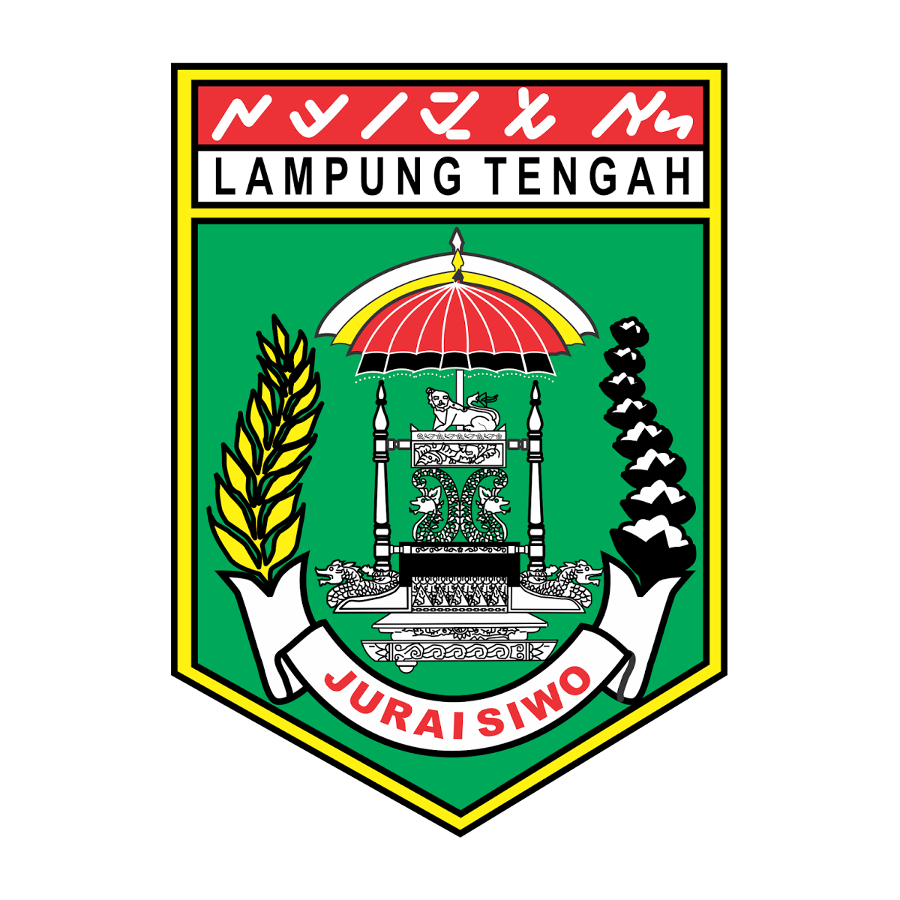
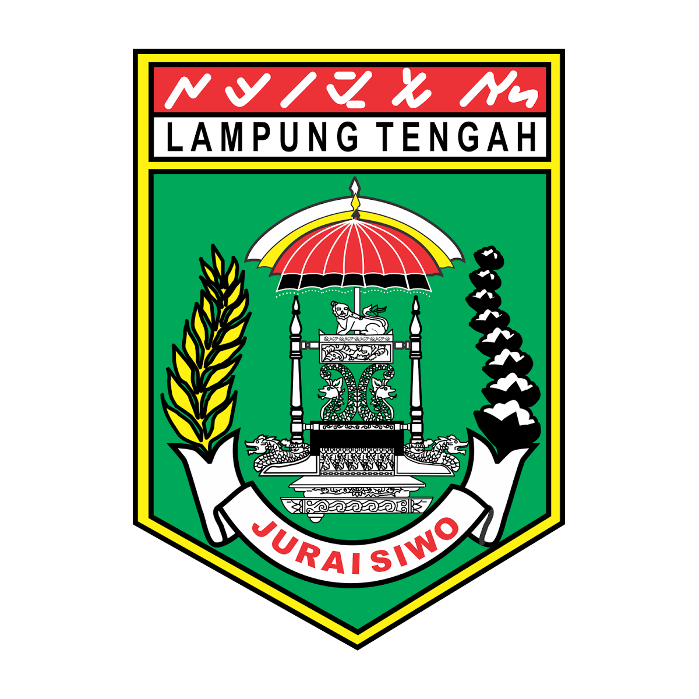
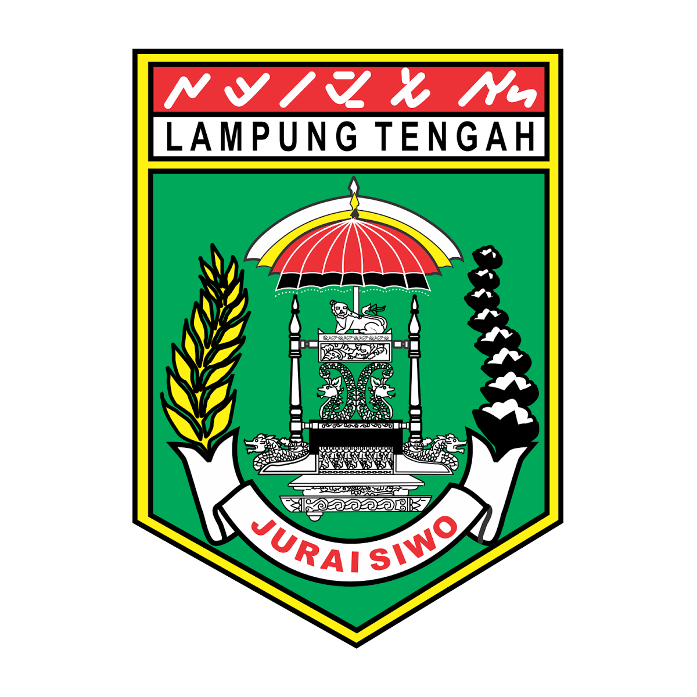
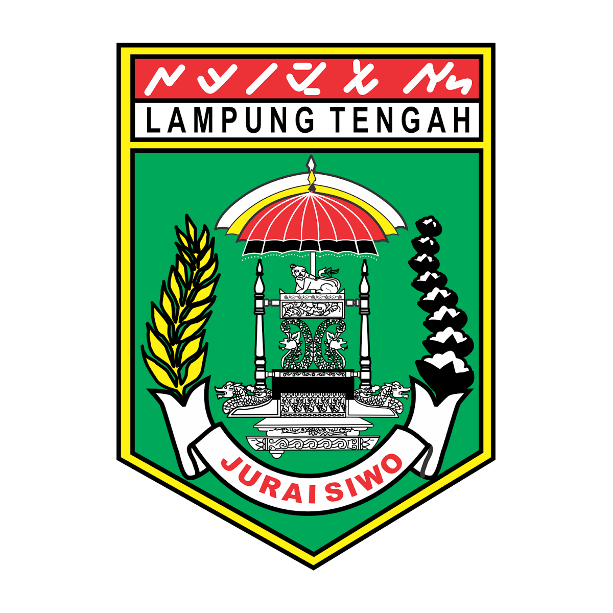

TANAMAN OBAT KELUARGA
 



Kingdom : Plantae
Divisi : Spermatophyta
Sub divisi : Angiospermae
Class : Monocotyledonae
Ordo : Zingiberales
Famili : Zingiberaceae
Genus : Curcuma
Spesies : Curcuma xanthorrhiza ROXB
Menurunkan kolesterol
Mengobati batuk pada anak
Mengatasi Asam urat
Meredakan Maag
Mengatasi Gangguan Pencernaan